Visualize Data on Spirals
Zuguang Gu (z.gu@dkfz.de)
2021-06-23
Source:vignettes/spiralize.Rmd
spiralize.RmdIn this vignette, I describe the package spiralize which visualizes data along an Archimedean spiral. It has two major advantages for visualization:
- It is able to visualize data with very long axis with high resolution.
- It is efficient for time series data to reveal periodic patterns.
The Archimedean spiral
In polar coordinates (\(r\), \(\theta\)), the Archimedean spiral has the following form:
\[ r = b \cdot \theta \]
where \(b\) controls the distance between two loops. The radical distance between two neighbouring loops for a given \(\theta\) is:
\[ d(\theta) = r(\theta + 2\pi) - r(\theta) = b \cdot (\theta + 2\pi) - b \cdot \theta = b \cdot 2\pi \]
This shows the radical distance between two neighbouring loops is independent to the value of \(\theta\) and is a constant value. The following figure demonstrates an Archimedean spiral with 4 loops (\(\theta \in [0, 8\pi]\)).
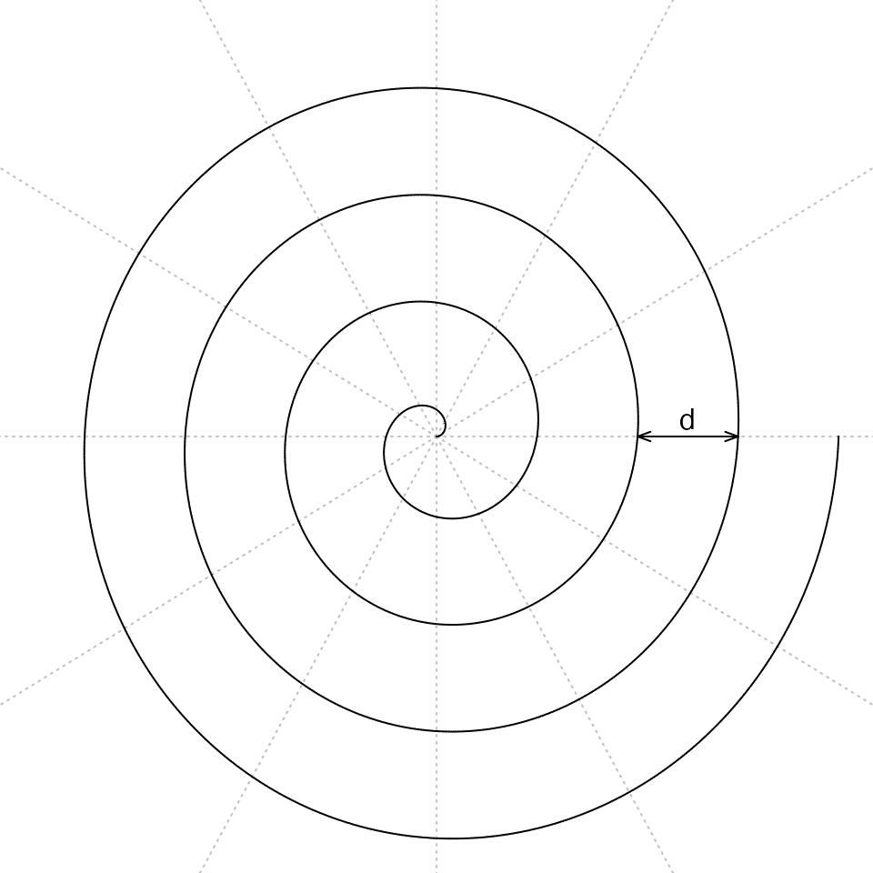
Note \(\theta\) can also be negative values where the spiral is mirrored by y-axis (in Cartesian coordinates). In spiralize, we only consider \(\theta\) as positive values. The mirrored spiral can be set by the flip argument which is introduced later in this vignette.
Since the distance between any two neighbouring loops for any given \(\theta\) is constant, it is a ideal place to put tracks along the spiral where the tracks have identical radical heights everywhere. Later the tracks can be served as virtual coordinate systems to map to data. This is why the package is called “spiralize” (to transform a normal Cartesian coordinate system to a curved spiral shape). The following two figures demonstrate a spiral with one track and with two tracks. The red line is the spiral itself. The spiral ranges between \(\pi/2\) and \(6\pi\). It is easy to see the upper border of each track is also a spiral but with an offset \(a\):
\[ r = a + b \cdot \theta \]
where \(a\) is the offset to the “Base spiral” (the red spiral in the following plots).
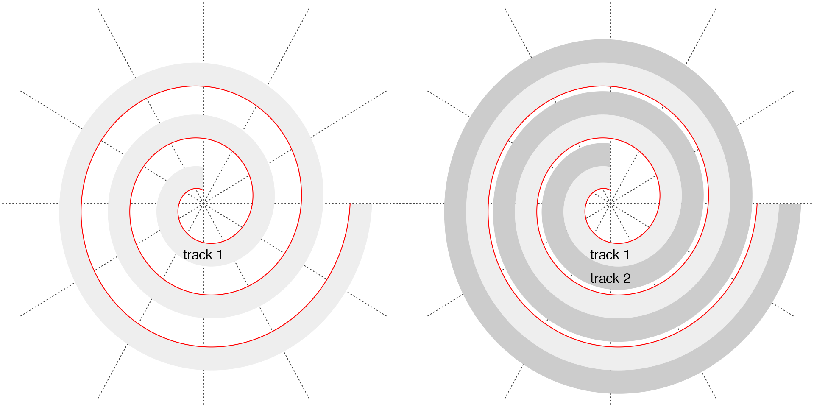
Denote the maximal radius of the spiral as \(d_{max} = b \cdot \theta_{max}\), and denote the length of the spiral as \(l\) (which has a complex form, see https://downloads.imagej.net/fiji/snapshots/arc_length.pdf), we can treat \(d_{max}\) as the resolution of the visualization applied in the normal Cartesian coordinate system and \(l\) as the resolution of the visualization applied on the spiral. Then the ratio of the two resolutions is:
\[ ratio = \frac{l}{2d_{max}} \]
E.g., for a spiral with 5 loops (\(\theta_{max} = 10\pi\)), the ratio is 7.89, which means the spiral improves the resolution of visualization almost to 8 folds. Generally, the ratio increases almost linearly to the number of loops.
The layout of the spiral
The function spiral_initialize() is used to intialize the spiral. Arguments start and end control the angular range of the spiral. Here the values should be in degrees and they are converted to radians internally.
In spiralize, the parameter \(b\) in the spiral equation \(r = b \cdot \theta\) is set to \(b = 1/2\pi\), so that the distance between two neighbouring loops is \(d = 1\). Denote \(\theta_e\) as the end angle (in radians) of the spiral, the ranges of the viewport (under grid graphics system) on both x-axis and y-axis that draw the spiral are \([-x, x]\) where
\[x = b \cdot \theta_e + d = 1/2\pi \cdot \theta_e + 1\]
The following two plots demonstrate different values of start and end. Also as shown in the following example code, I suggest to set the values of start and end in a form of 360*a + b, e.g. 360*4 + 180, so that it is straighforward to know the positions in the polar coordinates and how many loops there are in the spiral (I think people should feel more natural with degrees than radians).
# the left plot
spiral_initialize(start = 90, end = 360)
spiral_track()
# the right plot
spiral_initialize(start = 180, end = 360*4 + 180)
spiral_track()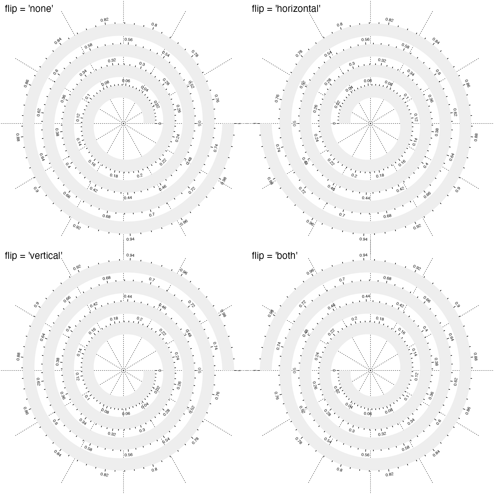
Argument flip controls how to flip the spiral. It accpets one of the four values: "none"/"horizontal"/"vertical"/"both". Examples are as follows. In the examples, I additionally add the axes in the tracks to show in which direction the data extends along the spiral. I also manually adjust the height of the track to give enough space for axes.
# the top left plot
spiral_initialize(flip = "none") # default
spiral_track(height = 0.6)
spiral_axis()
# the top right plot
spiral_initialize(flip = "horizontal")
spiral_track(height = 0.6)
spiral_axis()
# the bottom left plot
spiral_initialize(flip = "vertical")
spiral_track(height = 0.6)
spiral_axis()
# the bottom right plot
spiral_initialize(flip = "both")
spiral_track(height = 0.6)
spiral_axis()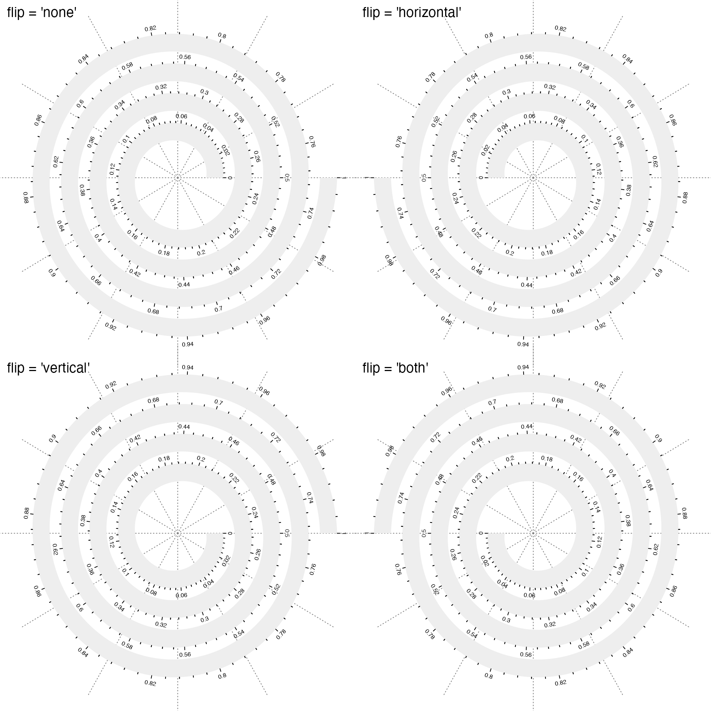
Argument scale_by controls how to linearly scale the data on the spiral. It allows value of "angle" or "curve_length" (or for short, "curve"). "angle" means equal difference on data corresponds to equal difference of angles in the polar coordinates. "curve_length" means equal difference on data corresponds to euqal difference of the length of the spiral. Observe how the axis ticks distribute in the following two plots. Also the polar lines are removed for scale_by = "curve_length".
# the left plot
spiral_initialize(scale_by = "angle") # default
spiral_track(height = 0.6)
spiral_axis()
# the right plot
spiral_initialize(scale_by = "curve_length")
spiral_track(height = 0.6)
spiral_axis()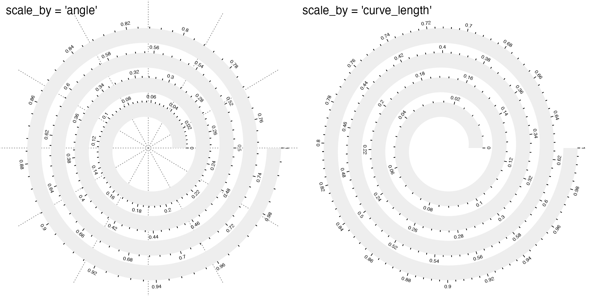
The following heatmaps might be clearer to demonstrate the difference between "angle" and "curve_length". In this example, each grid has the equal bin size of the data.
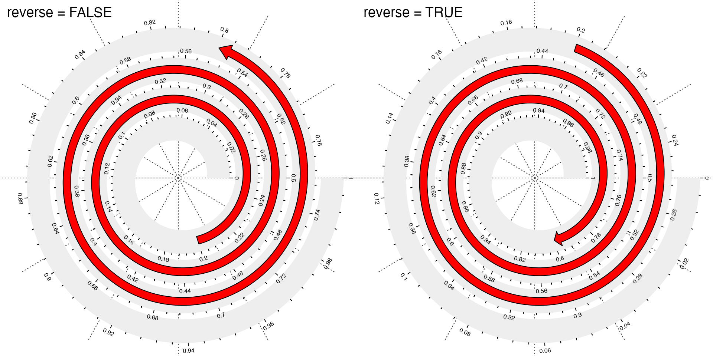
As you can see, when scale_by is set to "angle", in outer loops, even when the actually difference on data is the same, the physical widths are larger than these in inner loops. Nevertheless, when the data is time series or periodic, "angle" is the proper choice because it is easy to directly compare between loops which are the same time points over different periods. As a comparison, "curve_length" won’t provide any periodic information.
The spiral grows from inner loops to outer loops, thus, by default, data increases from the inner loops as well. This can be reversed by setting argument reverse = TRUE. See the following example and also observe the axes. The red arrows indicate the direction of axes.
# the left plot
spiral_initialize(reverse = FALSE) # default
spiral_track()
spiral_arrow(0.2, 0.8, gp = gpar(fill = "red"))
spiral_axis()
# the right plot
spiral_initialize(reverse = TRUE)
spiral_track()
spiral_arrow(0.2, 0.8, gp = gpar(fill = "red"))
spiral_axis()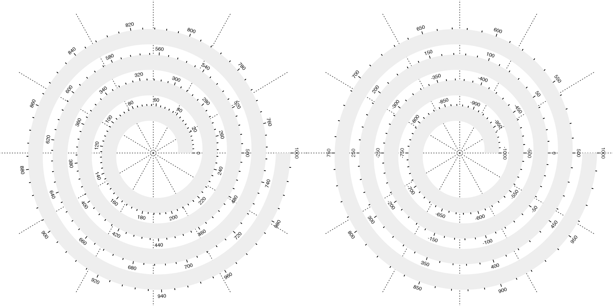
To map data to spiral, argument xlim should be set which corresponds to data range on x-axis. Observe the axes in the following plots.
# the left plot
spiral_initialize(xlim = c(0, 1000))
spiral_track(height = 0.6)
spiral_axis()
# the right plot
spiral_initialize(xlim = c(-1000, 1000))
spiral_track(height = 0.6)
spiral_axis()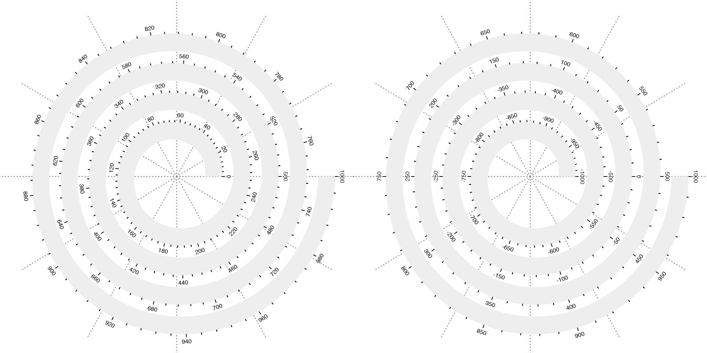
Create tracks
After the spiral is intialized, next we can add tracks along it. Argument height controls the height of the track. The value of height is a value between 0 and 1 which is the fraction of the distance between two neighbouring loops in the spiral. In the following left plot, I add black border to the track by setting the argument background_gp.
# the left plot
spiral_initialize()
spiral_track(height = 1, background_gp = gpar(col = "black"))
# the right plot
spiral_initialize()
spiral_track(height = 0.5)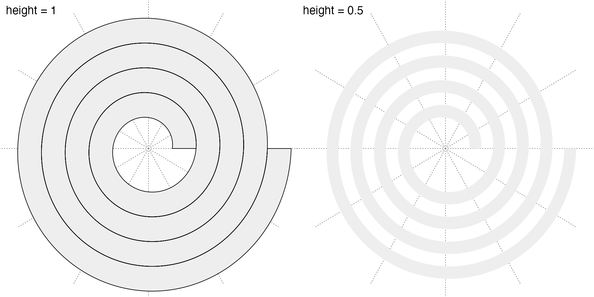
Multiple tracks can be added sequentially. Just note the sum of heights of all tracks should not exceed 1.
spiral_initialize()
spiral_track(height = 0.4, background_gp = gpar(fill = 2))
spiral_track(height = 0.2, background_gp = gpar(fill = 3))
spiral_track(height = 0.1, background_gp = gpar(fill = 4))
Data range on y-axis is specified by the argument ylim. In the following example, I also add a y-axis by spiral_yaxis().
spiral_initialize()
spiral_track(ylim = c(0, 100))
spiral_yaxis()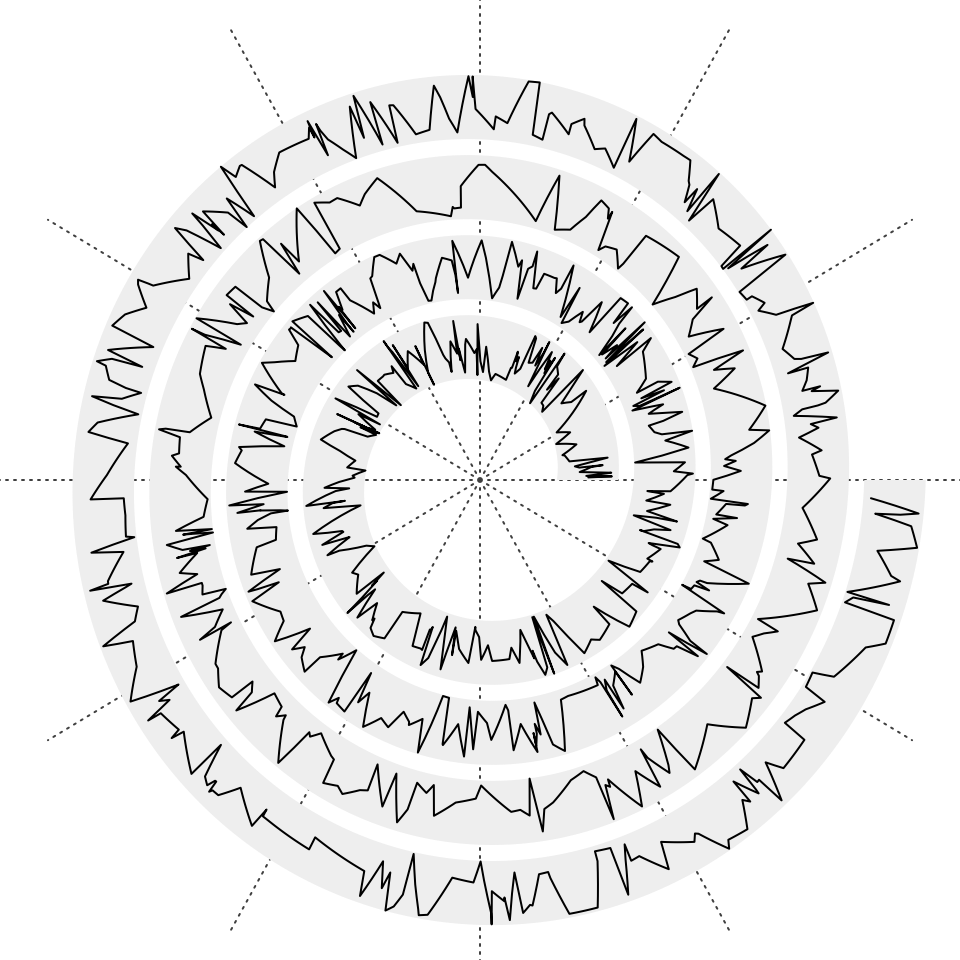
Graphics functions
Tracks are created with data ranges on both x-axis and y-axis. Now the tracks can be thought as normal Cartesian coordinates. There are following low-level graphics functions so that complex plots can be easily constructed by combining these low-level graphics functions.
Points
Like other graphics functions e.g. points() or grid.points(), the “spiral graphics functions” also accept locations on x-axis and y-axis for data points. spiral_points() draws points in the spiral track.
spiral_initialize() # by default xlim = c(0, 1)
spiral_track() # by default ylim = c(0, 1)
spiral_points(x = runif(1000), y = runif(1000))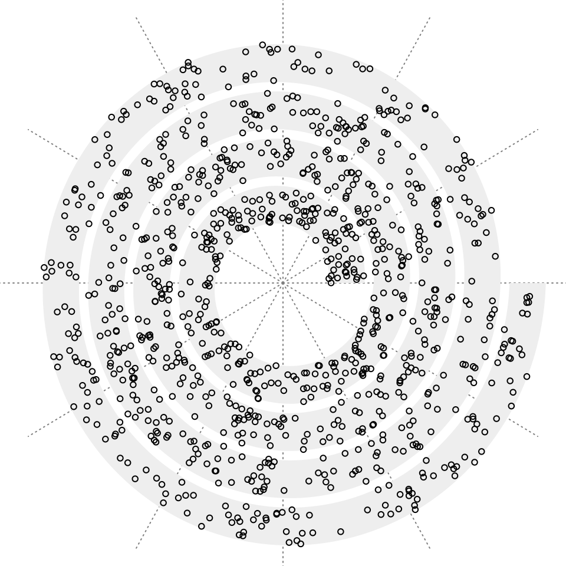
Lines
Adding lines with spiral_lines() is also straightforward:
x = sort(runif(1000))
y = runif(1000)
spiral_initialize()
spiral_track()
spiral_lines(x, y)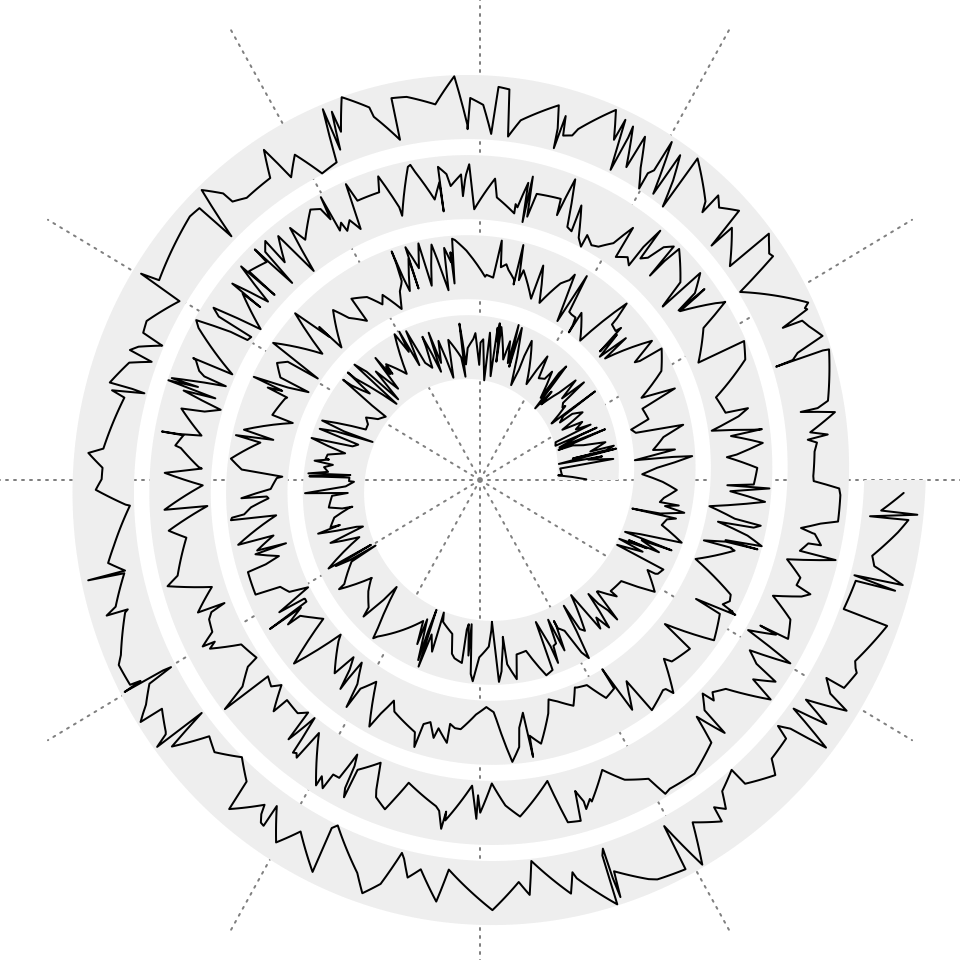
Argument type can be set to "h" so that vertical lines (or radical lines if you take polar coordinates as reference) are drawn to the baseline for each data point.
# the left plot
spiral_initialize()
spiral_track()
spiral_lines(x, y, type = "h")
# the right plot
spiral_initialize()
spiral_track()
spiral_lines(x, y, type = "h", baseline = 0.5, gp = gpar(col = ifelse(y > 0.5, "red", "blue")))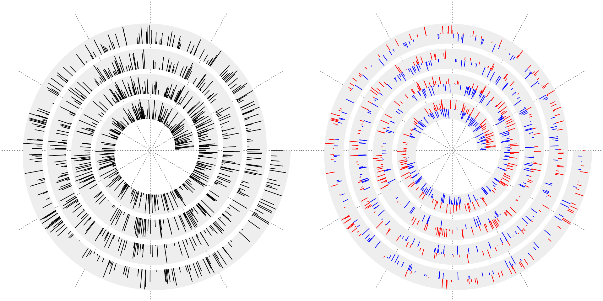
Argument area can be set to TRUE so that area under the lines can be filled with a certain color.
spiral_initialize()
spiral_track()
spiral_lines(x, y, area = TRUE, gp = gpar(fill = 2, col = NA))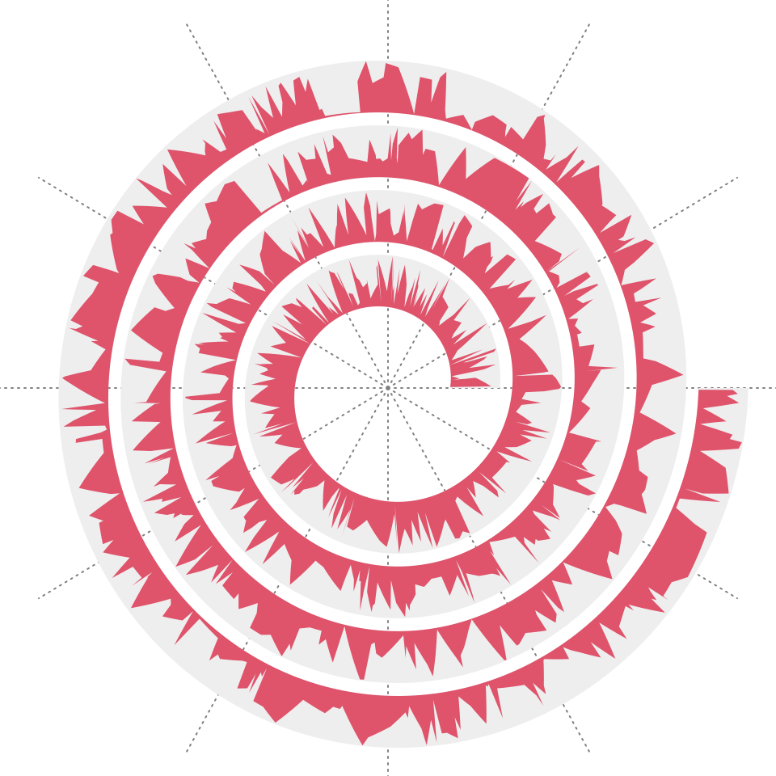
Note you can also set baseline with area = TRUE, however, you cannot set different colors for the area above the baseline and below the baseline. Consider to use spiral_bars() or spiral_horizon() for this scenario.
Segments
spiral_segments() draws a list of segments.
n = 1000
x0 = runif(n)
y0 = runif(n)
x1 = x0 + runif(n, min = -0.01, max = 0.01)
y1 = 1 - y0
spiral_initialize(xlim = range(c(x0, x1)))
spiral_track()
spiral_segments(x0, y0, x1, y1,
gp = gpar(col = circlize::rand_color(n, luminosity = "bright"), lwd = runif(n, 0.5, 3)))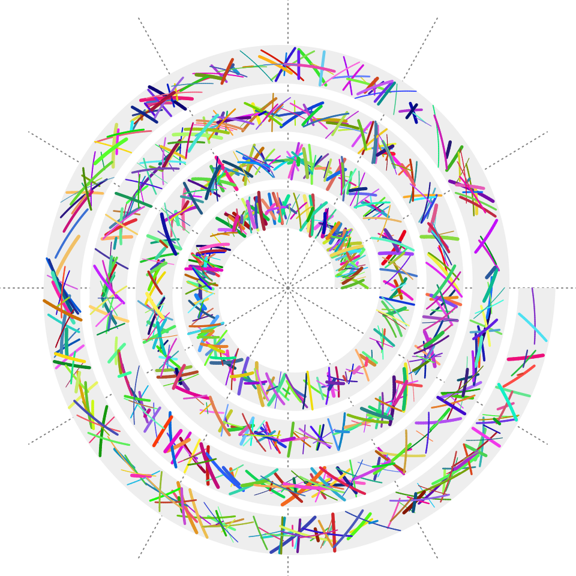
Rectangles
spiral_rect() draws rectangles, which is the base function for drawing heatmaps and barplots. The first four arguments are the coordinates of the bottom left and top right of the rectangles.
n = 1000
require(circlize)
spiral_initialize(xlim = c(0, n))
spiral_track(height = 0.9)
x1 = runif(n)
col1 = circlize::colorRamp2(c(0, 0.5, 1), c("blue", "white", "red"))
spiral_rect(1:n - 1, 0, 1:n, 0.5, gp = gpar(fill = col1(x1), col = NA))
x2 = runif(n)
col2 = circlize::colorRamp2(c(0, 0.5, 1), c("green", "white", "red"))
spiral_rect(1:n - 1, 0.5, 1:n, 1, gp = gpar(fill = col2(x2), col = NA))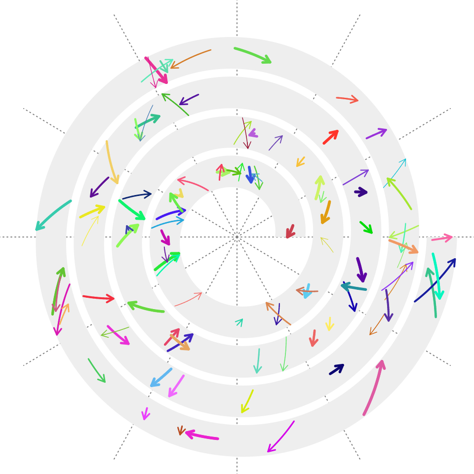
Bars
spiral_bars() can draw bars simply from a numeric vector. Bars can also be drawn to a baseline.
x = seq(1, 1000, by = 1) - 0.5 # middle points of bars
y = runif(1000)
# the left plot
spiral_initialize(xlim = c(0, 1000))
spiral_track(height = 0.8)
spiral_bars(x, y)
# the right plot
spiral_initialize(xlim = c(0, 1000))
spiral_track(height = 0.8)
spiral_bars(x, y, baseline = 0.5, gp = gpar(fill = ifelse(y > 0.5, 2, 3), col = NA))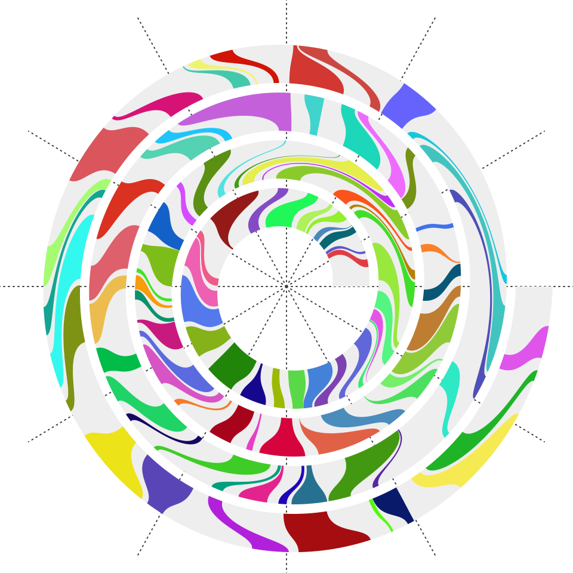
spiral_bars() can also draw bars from a matrix, then each column in the matrix correspond to one stack of the bars.
y = matrix(runif(3*1000), ncol = 3)
y = y/rowSums(y)
spiral_initialize(xlim = c(0, 1000))
spiral_track(height = 0.8)
spiral_bars(x, y, gp = gpar(fill = 2:4, col = NA))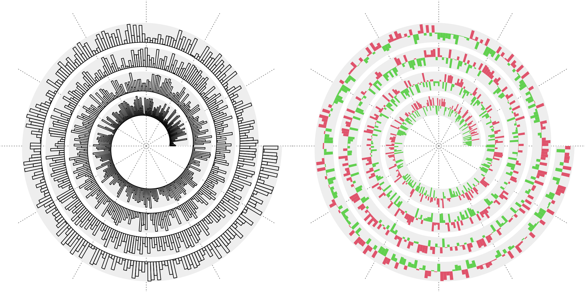
Polygons
spiral_polygon() draws polygons. Note the polygon must be closed, which means, the last data point should overlap to the first one.
x0 = sort(runif(200))
x0 = matrix(x0, ncol = 2, byrow = TRUE)
x1 = sort(runif(200))
x1 = matrix(x1, ncol = 2, byrow = TRUE)
spiral_initialize()
spiral_track()
for(i in 1:100) {
pt1 = circlize:::get_bezier_points(x0[i, 1], 0, x1[i, 1], 1, xlim = c(0, 1), ylim = c(0, 1))
pt2 = circlize:::get_bezier_points(x0[i, 2], 0, x1[i, 2], 1, xlim = c(0, 1), ylim = c(0, 1))
spiral_polygon(
c(x0[i, 1], x0[i, 2], pt2[, 1], rev(pt1[, 1]), x0[i, 1]),
c(0, 0, pt2[, 2], rev(pt1[, 2]), 0),
gp = gpar(fill = rand_color(1, luminosity = "bright"), col = NA)
)
}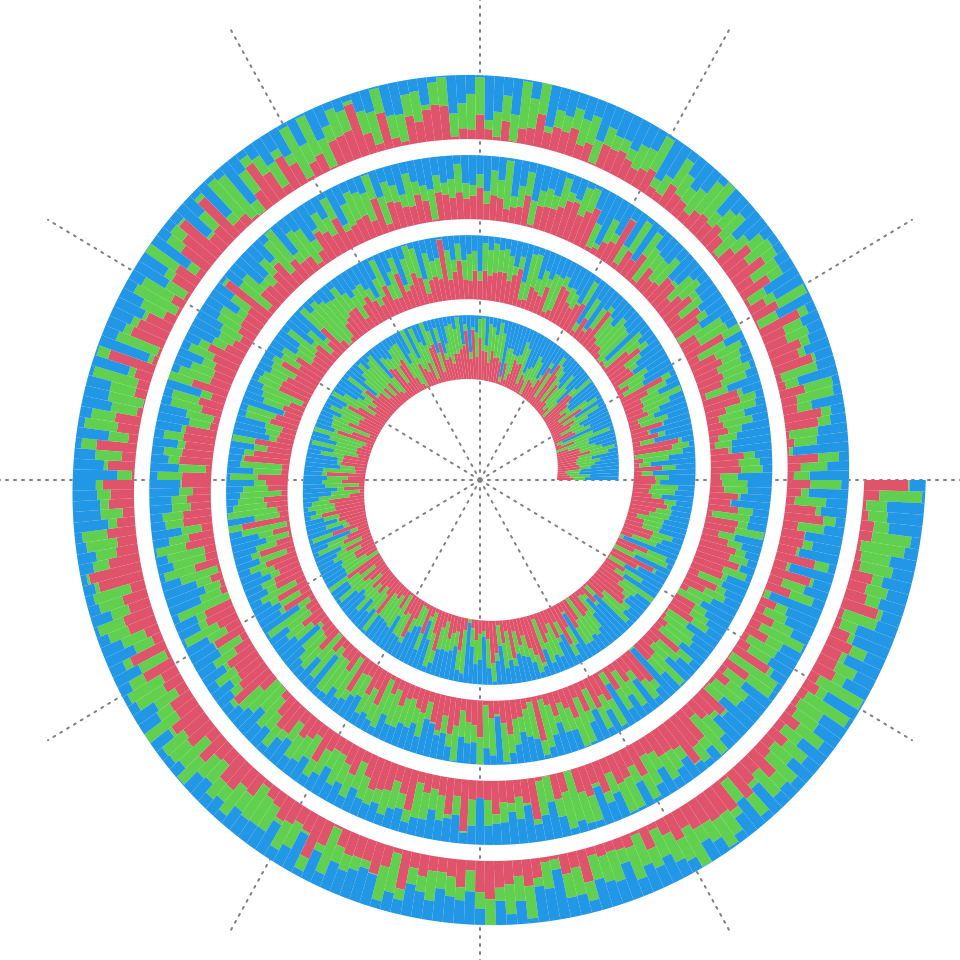
Text
spiral_text() draws texts. Argument facing controls the rotation of texts.
x = seq(0.1, 0.9, length = 26)
text = strrep(letters, 6)
# the top left plot
spiral_initialize()
spiral_track()
spiral_text(x, 0.5, text, facing = "downward") # default
# the bottom left plot
spiral_initialize()
spiral_track()
spiral_text(x, 0.5, text, facing = "inside")
# the bottom right plot
spiral_initialize()
spiral_track()
spiral_text(x, 0.5, text, facing = "outside")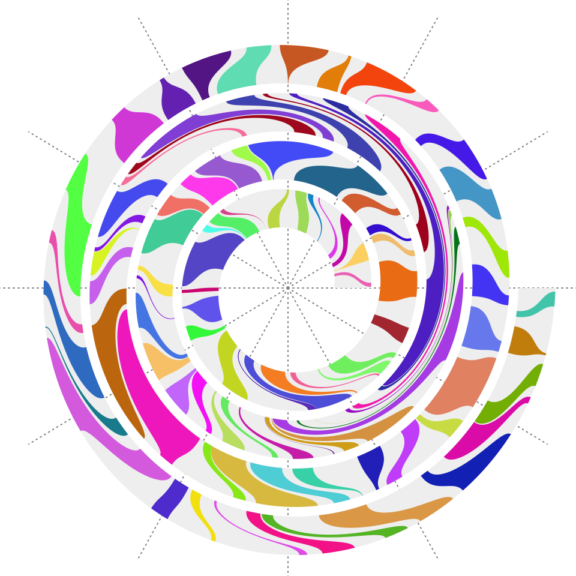
For long texts, facing can be set to "curved_inside" or "curved_outside" so that curved texts are draw along the spiral.
x = seq(0.1, 0.9, length = 10)
text = rep(paste(letters, collapse = ""), 10)
# the left plot
spiral_initialize()
spiral_track()
spiral_text(x, 0.5, text, facing = "curved_inside")
# the right plot
spiral_initialize()
spiral_track()
spiral_text(x, 0.5, text, facing = "curved_outside")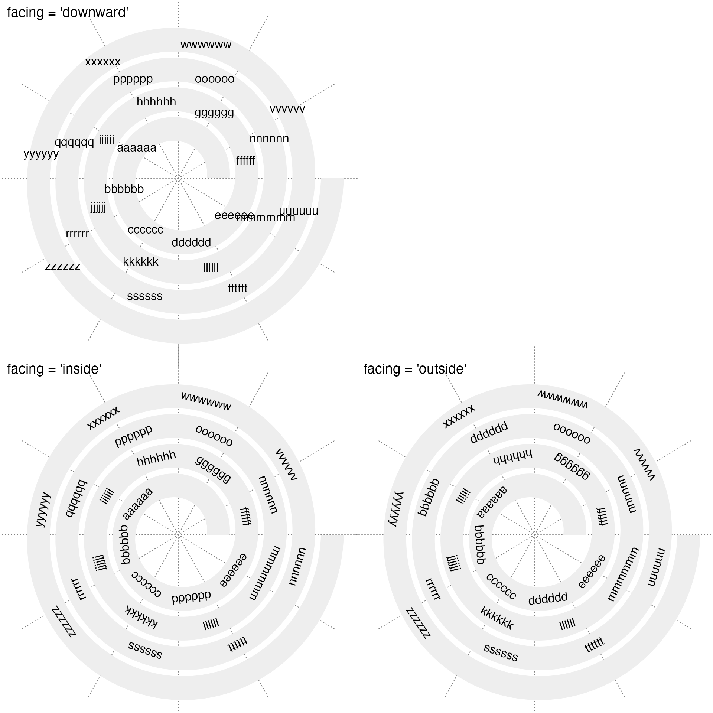
Calculation of positions of letters of the curved text depends on the size of current graphics device. When the device changes its size, the positions of letters will not be correct and you need to regenerate the plot. Also users need to be careful when using grid.grabExpr() to capture the plot. By default grid.grabExpr() captures graphics output in a device with 7inch x 7inch. Users might need to manually set the device size to make sure the curved texts are not affected.
In the next example, I use grid.grabExpr() to capture two spiral plots with curved texts. Later the two plots are merged with using the cowplot package and the final merged plot is saved in a PDF with 10 inches width and 5 inches height. I manually set the device size in the two grid.grabExpr() calls so that the size of the place where the graphics are captured is the same as the size of the place where they are finally drawn.
p1 = grid.grabExpr({
spiral_initialize()
spiral_track()
spiral_text(x, 0.5, text, facing = "curved_inside")
}, width = 5, height = 5)
p2 = grid.grabExpr({
spiral_initialize()
spiral_track()
spiral_text(x, 0.5, text, facing = "curved_outside")
}, width = 5, height = 5)
pdf(..., width = 10, height = 5)
plot_grid(p1, p2)
dev.off()one last thing for drawing text is that the argument nice_facing can be set to TRUE so that the rotation of texts are automatically adjusted so that they are easy to read, i.e. all the texts always face the lower part of the polar coordinate system.
Axis
spiral_aixs() draws axis along the spiral. So it is the x-axis of the data.
spiral_initialize()
spiral_track(height = 0.6)
spiral_axis()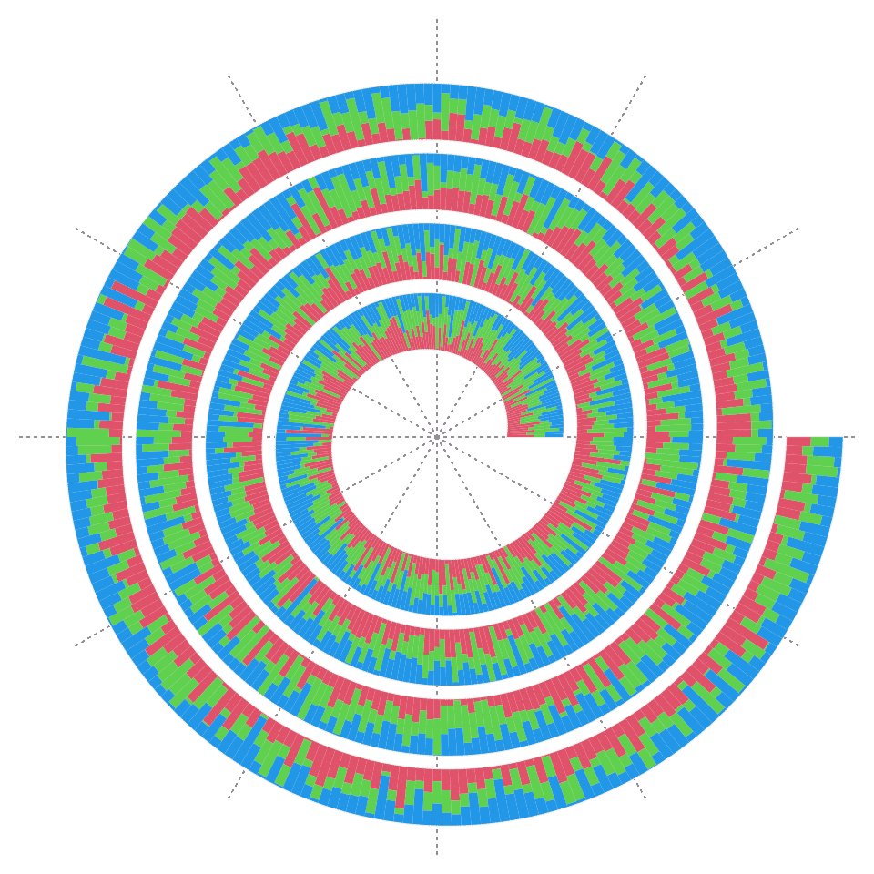
Argument major_at or simply at controls the break points on the axis and argument labels controls the corresponding axis labels.
# the left plot
spiral_initialize(xlim = c(0, 360*4), start = 360, end = 360*5)
spiral_track(height = 0.6)
spiral_axis(major_at = seq(0, 360*4, by = 30))
# the right plot
spiral_initialize(xlim = c(0, 12*4), start = 360, end = 360*5)
spiral_track(height = 0.6)
spiral_axis(major_at = seq(0, 12*4, by = 1), labels = c("", rep(month.name, 4)))If the axis labels are too long, argument curved_labels can be set to TRUE so that the labels are curved along the spiral.
spiral_initialize()
spiral_track(height = 0.6)
spiral_axis(at = c(0.1, 0.3, 0.6, 0.9), labels = strrep(letters[1:4], 20), curved_labels = TRUE)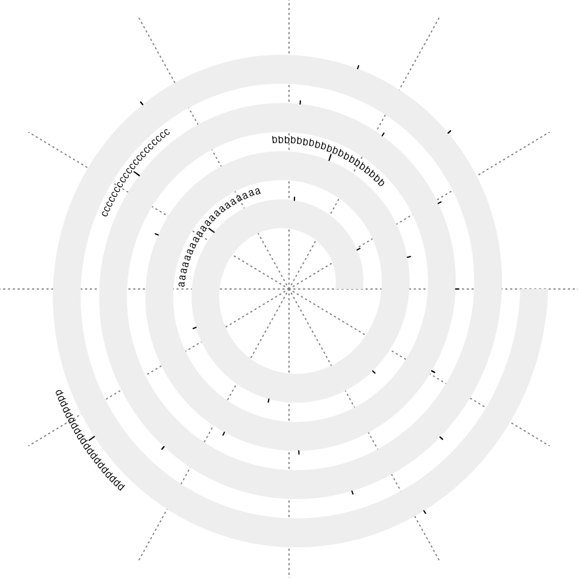
spiral_yaxis() draws y-axis. Argument side controls which side of the track to put the y-axis. side can be set to "both" so that y-axis is drawn on the two sides of the track.
# the left plot
spiral_initialize()
spiral_track(height = 0.8)
spiral_yaxis(side = "start")
spiral_yaxis(side = "end", at = c(0, 0.25, 0.5, 0.75, 1), labels = letters[1:5])
# the right plot
spiral_initialize()
spiral_track(height = 0.8)
spiral_yaxis(side = "both")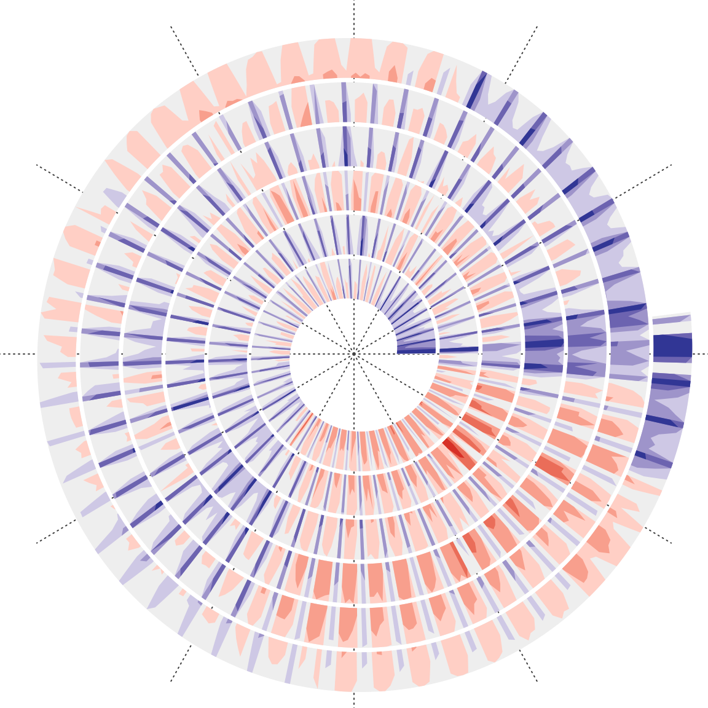
Horizon chart
Tracks along the spiral are long, but the heights of the tracks are normally very small. Horizon chart is an effcient way to visualize distributions by vertically folding the distribution graphics, which makes it possible to visualize in a plotting region with a very small height.
In the next example, I visualize difference of ggplot2 daily downloads to the mean of the current year, between 2015-01-01 to 2020-12-31.
# The data can be downloaded by the next line. The data object is already saved in spiralize package.
# df = cranlogs::cran_downloads("ggplot2", from = "2015-01-01")
df = readRDS(system.file("extdata", "ggplot2_downloads.rds", package = "spiralize"))
# to simplify the data, I only take the complete years between 2015 and 2020
df = df[df$date < as.Date("2021-01-01"), ]
day_diff = as.double(df$date[nrow(df)] - df$date[1], "days")
year_mean = tapply(df$count, lubridate::year(df$date), function(x) mean(x[x > 0]))
df$diff = log2(df$count/year_mean[as.character(lubridate::year(df$date))])
df$diff[is.infinite(df$diff)] = 0
q = quantile(abs(df$diff), 0.99) # adjust outliers
df$diff[df$diff > q] = q
df$diff[df$diff < -q] = -q
head(df)## date count package diff
## 1 2015-01-01 817 ggplot2 -1.4789475
## 2 2015-01-02 1218 ggplot2 -1.4789475
## 3 2015-01-03 1063 ggplot2 -1.4789475
## 4 2015-01-04 1106 ggplot2 -1.4789475
## 5 2015-01-05 2171 ggplot2 -1.1495651
## 6 2015-01-06 2455 ggplot2 -0.9722018Function spiral_horizon() draws the horizon chart along the spiral. The input variables are x-locations and y-locations of the data. To align weeks at different years, each loop contains 364 (52 weeks). In the following plot, red areas correspond to those days when daily downloads are higher than the yearly average and blue areas correspond to the days when daily downloads are less than the yearly average.
spiral_initialize(xlim = c(0, nrow(df)), start = 360, end = 360*(day_diff/364) + 360) # a circle of 52 weeks
spiral_track(height = 0.9)
spiral_horizon(1:nrow(df) - 0.5, df$diff)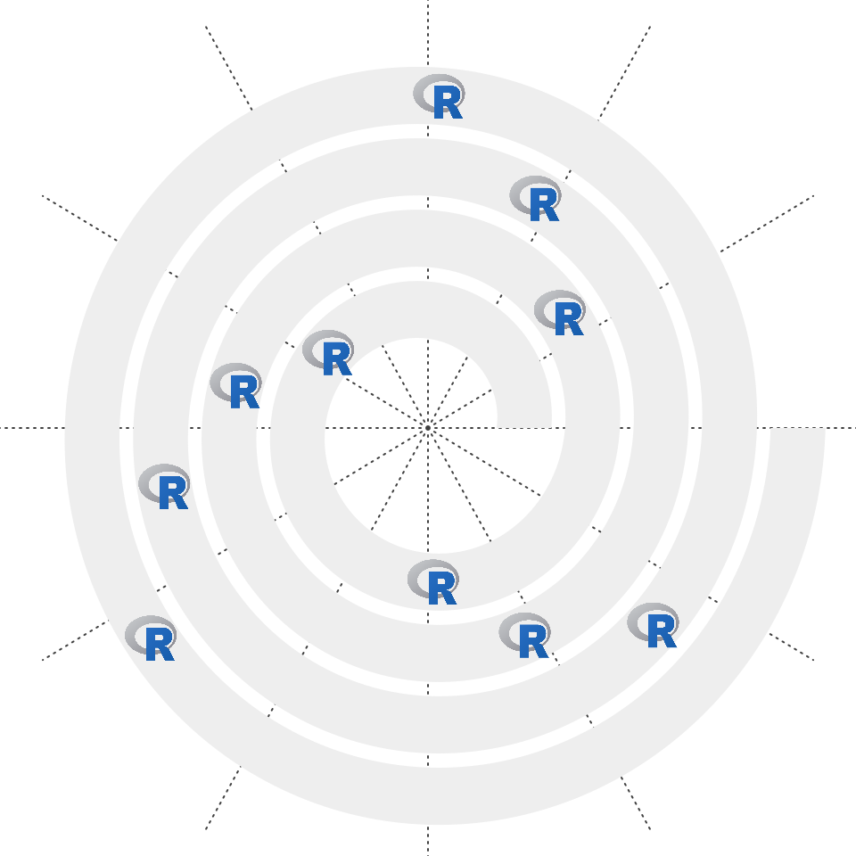
Bars can be used to put on each days by setting argument use_bar = TRUE:
spiral_initialize(xlim = c(0, nrow(df)), start = 360, end = 360*(day_diff/364) + 360)
spiral_track(height = 0.9)
spiral_horizon(1:nrow(df) - 0.5, df$diff, use_bars = TRUE)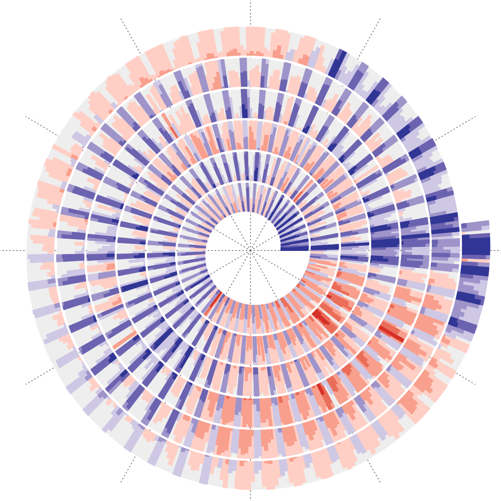
Images
spiral_raster() adds images to the spiral. Currently it supports formats of png/svg/pdf/eps/jpeg/jpg/tiff. The formats can be mixed used.
image = system.file("extdata", "Rlogo.png", package = "circlize")
x = seq(0.1, 0.9, length = 10)
spiral_initialize()
spiral_track()
spiral_raster(x, 0.5, image)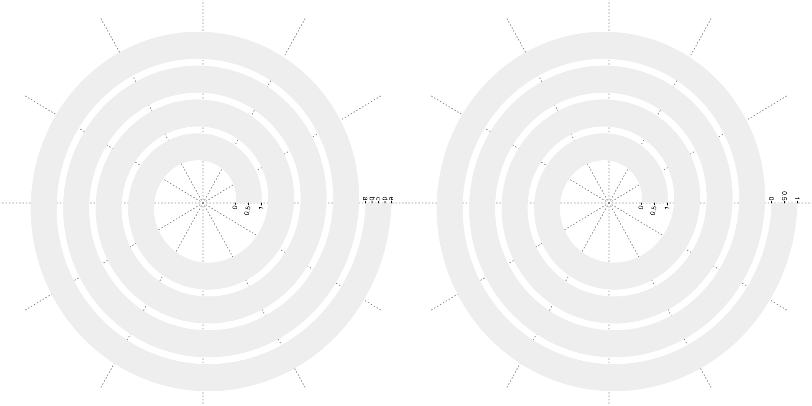
Similar as text, argument facing can be set to control the rotation of images. If nice_facing = TRUE, the image with rotation facing the top will be automatically adjusted to bottom.
# the left plot
spiral_initialize()
spiral_track()
spiral_raster(x, 0.5, image, facing = "inside")
# the right plot
spiral_initialize()
spiral_track()
spiral_raster(x, 0.5, image, facing = "inside", nice_facing = TRUE)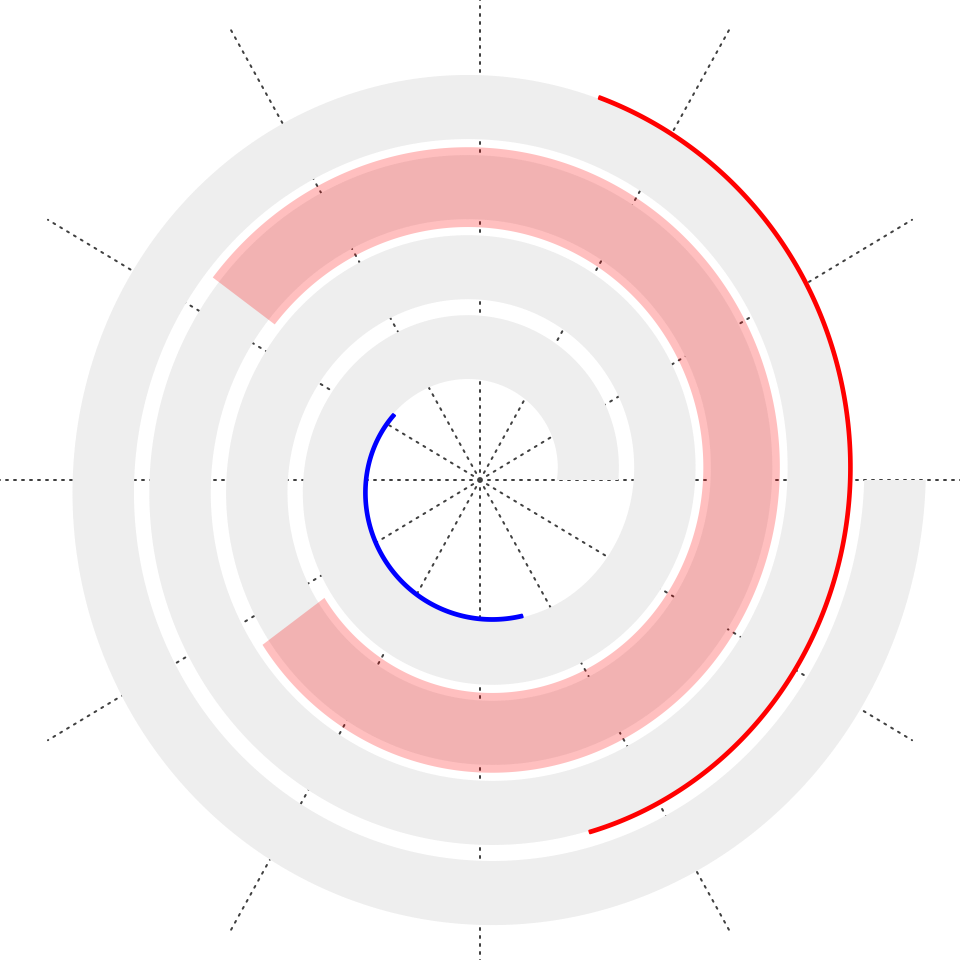
Arrows
spiral_arrow() draws arrows along the spiral.
spiral_initialize()
spiral_track()
spiral_arrow(0.3, 0.6, gp = gpar(fill = "red", col = NA))
spiral_arrow(0.8, 0.9, gp = gpar(fill = "blue"), tail = "point", arrow_position = "start")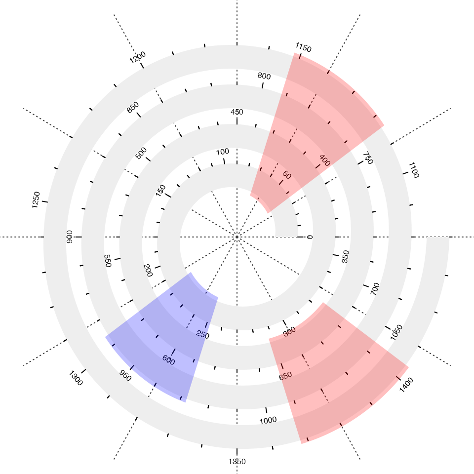
Highlight
spiral_highlight() highlights a specific section of the spiral. If the argument type is set to "rect" (the default), it highlights the section with a semi-transparent rectangle which covers the complete range on y-axis. If type is set to "line", an annotation line is drawn either at the bottom or on the top of the track.
spiral_initialize()
spiral_track()
spiral_highlight(0.4, 0.6)
spiral_highlight(0.1, 0.2, type = "line", gp = gpar(col = "blue"))
spiral_highlight(0.7, 0.8, type = "line", line_side = "outside")If scale_by is set to angle (the default), users might also want to highlight a specific of interval but across several cycles, e.g. from January to March in year 2000 to 2010. Here the function spiral_highlight_by_sector() draws a semi-transparent sector to highlight a fixed interval over several cycles.
The first four argument x1, x2, x3 and x4 in spiral_highlight_by_sector() determine the position of the sector. If only x1 and x2 are specified, the start circle is calculated from x1 and x2 and the end circle is the most outside one. If x3 and x4 are also specified, the outer circle is calcualted from x3 and x4.
spiral_initialize(xlim = c(0, 360*4), start = 360, end = 360*5)
spiral_track(height = 0.6)
spiral_axis()
spiral_highlight_by_sector(36, 72)
spiral_highlight_by_sector(648, 684)
spiral_highlight_by_sector(216, 252, 936, 972, gp = gpar(fill = "blue"))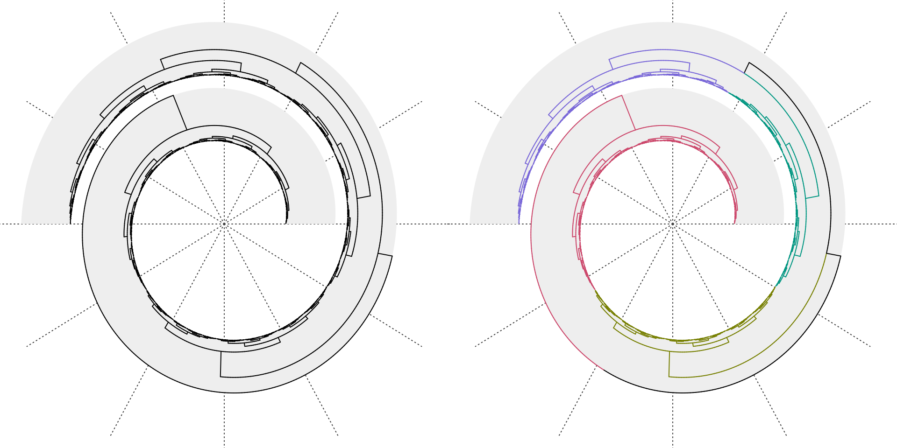
Dendrograms and phylogenetic trees
When the dendrograms or phlogenetic trees have huge number of leaves, it is also suitable to use spiral to visualize them. There are two functions: spiral_dendrogram() for dendrogram objects and spiral_phylo() for phylo objects.
Note since dendrograms or phylogenetic trees do not have “periodic patterns”, scale_by in spiral_initialize() is usually set to "curve_length".
The dendrogram object can be rendered with dendextend package. See the following examples.
dend = as.dendrogram(hclust(dist(runif(1000))))
# the left plot
spiral_initialize(xlim = c(0, 1000), start = 360, end = 360*2 + 180, scale_by = "curve_length")
spiral_track()
spiral_dendrogram(dend)
# the right plot
library(dendextend)
dend = color_branches(dend, k = 4)
spiral_initialize(xlim = c(0, 1000), start = 360, end = 360*2 + 180, scale_by = "curve_length")
spiral_track()
spiral_dendrogram(dend)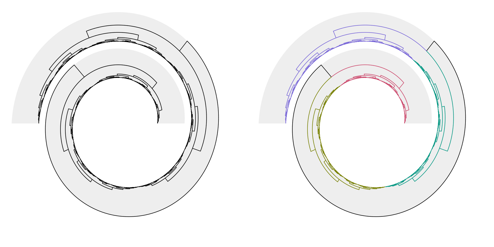
spiral_phylo() works on the phylo object. In the following example, to cut the phylogenetic tree into several parts, the phylo object is converted to a dendrogram by the function phylo_to_dendrogram(), later dendextend::cutree.dendrogram() is applied to obtain the splits.
library(ape)
data(hivtree.newick)
tree.hiv = read.tree(textConnection(hivtree.newick))
n = length(tree.hiv$tip.label) # number of leaves
spiral_initialize(xlim =c(0, n), start = 360, end = 360*2 + 180, scale_by = "curve_length")
spiral_track()
spiral_phylo(tree.hiv)
split = cutree(phylo_to_dendrogram(tree.hiv), k = 8)
tb = table(split)
for(i in seq_along(tb)) {
if(i == 1) {
spiral_highlight(0, tb[1], gp = gpar(fill = i))
} else {
spiral_highlight(sum(tb[1:(i-1)]), sum(tb[1:i]), gp = gpar(fill = i))
}
}
Utility functions
There are several utility functions which help to get the information of current spiral plot. spiral_info() prints the general information of current spiral:
spiral_initialize(xlim = c(0, 100))
spiral_track(ylim = c(-1, 1))
spiral_info()## An Archimedean spiral (r = b*theta) with the following parameters:
## b: 0.159154943091895
## distance between two neighbouring circles: 1
## xlim: [0, 100]
## range of theta (in degrees): [360, 1800]
## The spiral curve is linearly scaled by angle.
##
## track 1:
## ylim: [-1, 1]
## height: 0.8 (fraction of the distance of two neighbour loops)The special variable TRACK_META retrieves several meta-information of the current track.
TRACK_META## Please use in form of `TRACK_META$name`. Type `names(TRACK_META)` for supported names.
names(TRACK_META)## [1] "xlim" "xmin" "xmax" "xcenter" "xrange" "theta_lim"
## [7] "theta_min" "theta_max" "theta_center" "theta_range" "ylim" "ymin"
## [13] "ymax" "ycenter" "yrange" "radius_lim" "radius_min" "radius_max"
## [19] "radius_center" "radius_range" "abs_height" "rel_height" "track_index"The following two functions convert the data coordinates to polar coordinates or the canvas coordinates (the coordinates where the graphics are finally drawn).
The following three functions get or set the tracks:
current_track_index()set_current_track()n_track()
Session info
## R version 4.1.0 (2021-05-18)
## Platform: x86_64-apple-darwin17.0 (64-bit)
## Running under: macOS Big Sur 10.16
##
## Matrix products: default
## BLAS: /Library/Frameworks/R.framework/Versions/4.1/Resources/lib/libRblas.dylib
## LAPACK: /Library/Frameworks/R.framework/Versions/4.1/Resources/lib/libRlapack.dylib
##
## locale:
## [1] C/UTF-8/C/C/C/C
##
## attached base packages:
## [1] grid stats graphics grDevices utils datasets methods base
##
## other attached packages:
## [1] ape_5.5 dendextend_1.15.1 circlize_0.4.12 GetoptLong_1.0.5 cowplot_1.1.1
## [6] spiralize_0.99.0 knitr_1.33
##
## loaded via a namespace (and not attached):
## [1] viridis_0.6.1 sass_0.4.0 jsonlite_1.7.2 viridisLite_0.4.0
## [5] foreach_1.5.1 bslib_0.2.5.1 assertthat_0.2.1 highr_0.9
## [9] stats4_4.1.0 yaml_2.2.1 pillar_1.6.1 lattice_0.20-44
## [13] glue_1.4.2 digest_0.6.27 RColorBrewer_1.1-2 colorspace_2.0-1
## [17] htmltools_0.5.1.1 pkgconfig_2.0.3 purrr_0.3.4 scales_1.1.1
## [21] tibble_3.1.2 generics_0.1.0 IRanges_2.26.0 ggplot2_3.3.3
## [25] ellipsis_0.3.2 cachem_1.0.5 BiocGenerics_0.38.0 magrittr_2.0.1
## [29] crayon_1.4.1 memoise_2.0.0 evaluate_0.14 fs_1.5.0
## [33] fansi_0.5.0 doParallel_1.0.16 nlme_3.1-152 Cairo_1.5-12.2
## [37] textshaping_0.3.5 tools_4.1.0 GlobalOptions_0.1.2 lifecycle_1.0.0
## [41] matrixStats_0.59.0 ComplexHeatmap_2.8.0 stringr_1.4.0 S4Vectors_0.30.0
## [45] munsell_0.5.0 cluster_2.1.2 bezier_1.1.2 compiler_4.1.0
## [49] pkgdown_1.6.1 jquerylib_0.1.4 systemfonts_1.0.2 rlang_0.4.11
## [53] iterators_1.0.13 rjson_0.2.20 rmarkdown_2.8 gtable_0.3.0
## [57] codetools_0.2-18 DBI_1.1.1 R6_2.5.0 gridExtra_2.3
## [61] lubridate_1.7.10 dplyr_1.0.6 fastmap_1.1.0 utf8_1.2.1
## [65] clue_0.3-59 rprojroot_2.0.2 ragg_1.1.3 shape_1.4.6
## [69] desc_1.3.0 stringi_1.6.2 parallel_4.1.0 Rcpp_1.0.6
## [73] vctrs_0.3.8 png_0.1-7 tidyselect_1.1.1 xfun_0.23